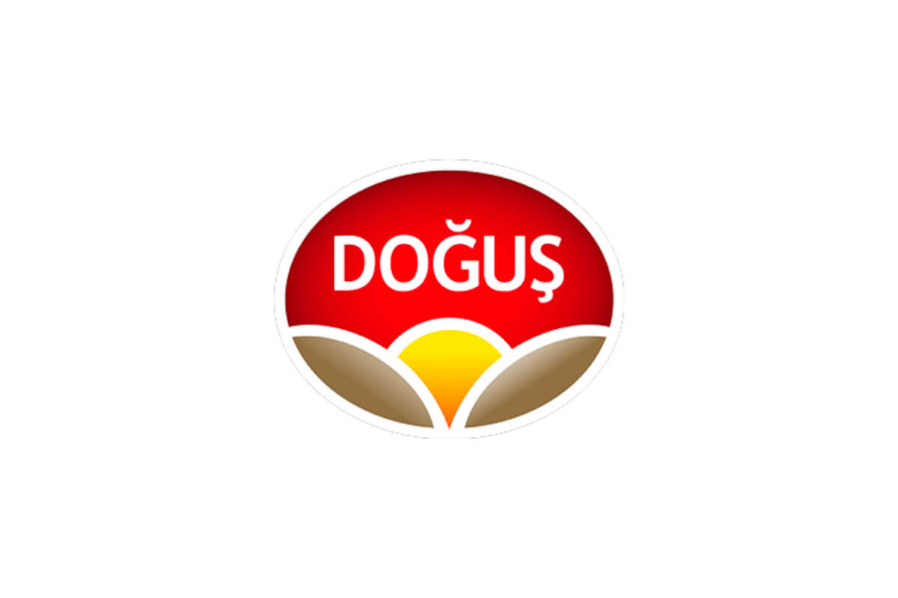
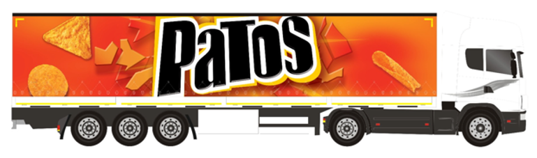

PDF Olarak İndir


WhatsApp Sevk Takip Sistemi
Otomatik İş Akışı Sunumu
▶ Sunumu Başlat
Sistem İş Akışı
📧
1. Görev Bildirimi
Sürücü ve filo yöneticisine görev bildirimi Whatsapp üstünden gönderilir
↓
📱
2. Görev Onayı
Sürücü WhatsApp üzerinden görevi okur ve onaylar
↓
🚚
3. Sevkiyat
Sürücü atanan sevkiyatı gerçekleştirir
↓
⏰
4. Otomatik Hatırlatma
Sistem sürücüye belge yükleme uyarısı gönderir (8 saat ve 24 saat)
↓
📸
5. Belge Paylaşımı
Sürücü teslim evrakı ve faturaları WhatsApp'tan resim olarak paylaşır
↓
✅
6. Otomatik Yükleme
Veriler ana sisteme otomatik yüklenir ve operasyon ekibine bildirim gönderilir
Sistem Avantajları
⚡
Hız ve Verimlilik
Otomatik bildirimler ve hatırlatmalarla manuel işlemler ortadan kalkar
🎯
Doğruluk
Otomatik sevk kodu tespiti ile hata oranı sıfıra yakın
📊
İzlenebilirlik
Tüm süreçler kayıt altında, anlık takip imkanı
💰
Maliyet Verimliliği
Günlük 70-1000 sevk işlenebilir, uygun maliyetler ile projelere kurulabilir
1
/
3
◀ Önceki
Sonraki ▶